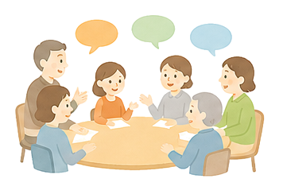

ホーム ＞ 活動アーカイブ
活動アーカイブ
過去の勉強会の記録です。開催が終わった回は、自動でこちらに新しい順で加わります。
第124回
2026年5月21日 ・ 船堀コミュニティ会館
ご存じですか？『重度認知症ケア』 ～医師がおすすめできるもう一つの認知症治療～
医療法人社団城東桐和会 タムスさくら病院江戸川 重度認知症デイケア ／ 尾張 友美 氏
第123回
2026年4月16日 ・ 船堀コミュニティ会館
『こども食堂』は食事だけの場ではない。 ～体験格差とネグレクトを超え、誰も置き去りにしない地域包括ケアへ～
NPO法人らいおんはーと ／ 佐藤 すずみ 氏
第122回
2026年3月19日 ・ コミュニティプラザ一之江
令和6年能登半島地震とBCP
医療法人社団美加未会 ひかりホームクリニック ／ 森 智治 氏
第121回
2026年2月19日 ・ 船堀コミュニティ会館
高齢者のメンタルヘルスとコミュニケーション
医療法人すずらん会 たろうクリニック葛西 ／ 浦島 創 氏
第120回
2026年1月22日 ・ 船堀コミュニティ会館
介護保険制度の見直し（令和7年度補正予算・令和8年度／令和9年度 介護報酬改定について）
株式会社 マロー・サウンズ・カンパニー ／ 代表取締役 田中 紘太 氏
